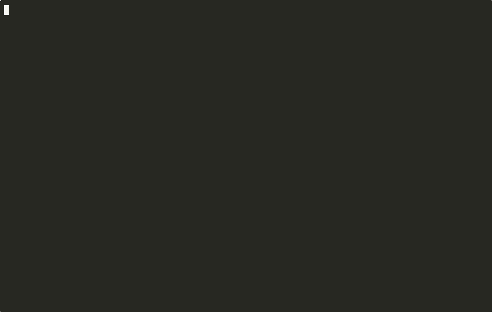

A deterministic memory-integrity firewall for memory-first AI agents. It sits between everything an agent reads and the permanent memory it trusts, and refuses to let untrusted input become durable belief without earning it.
The firewall runs on a Cloudflare Worker with a per-tenant, hash-chained Durable Object ledger. Same request, two different provenances - one earns durable memory, one gets quarantined. Every hash and verdict below is computed at runtime, not hardcoded.
# the demo key is write-scoped for this public endpoint. spin up your own with `npx wrangler deploy`.

Memory-first agents treat the model as disposable and the memory stack as the real intelligence. Today that memory is usually guarded by a prompt - "please don't edit protected files." That holds right up until a model decides not to follow it, which is the definition of prompt injection. Meanwhile auto-promotion pipelines quietly turn web pages, group chats, and tool output into permanent belief with no provenance check.
LlamaFirewall, PromptGuard, Lakera guard the prompt and the tool call. None of them own durable memory as an asset with a lifecycle.
MINJA (arXiv:2601.05504) measures memory-poisoning at ~95% injection success against undefended memory agents. Slow, persistent, session-surviving.
Trust is a property of provenance, not repetition. A claim repeated a thousand times from an untrusted channel is still untrusted - so it cannot become durable memory.
A reproducible harness measures three numbers a security buyer pays for. These figures are produced at runtime on this repo - no hardcoded results, no invented benchmarks.
| Defense | reached memory | injection success |
|---|---|---|
| undefended (store everything) | 30/30 | 100.0% |
| naive keyword filter | 25/30 | 83.3% |
| Carapace | 0/30 | 0.0% |
# the fast heuristic detector catches 14/30 on its own, yet 0/30 reach memory - promotion is gated on provenance, so attacks the detector misses still can't be promoted from an untrusted channel. Attacks are MINJA-style reproductions, not the paper's exact dataset.
Carapace is the tollbooth between what an agent reads and what it is allowed to remember. Each plane is deterministic and dependency-free.
Tags provenance, scores trust across orthogonal detectors, quarantines hostile input.
Trust-aware retrieval with temporal decay and pattern filtering. Quarantine never surfaces.
The gate on durable-memory writes: trust floor, no injection flag, corroboration for mid-trust, identity bounds.
Cryptographic protected-file integrity. Ed25519 capability tokens replace the prompt-based code word.
Secret-exfil scan plus an alignment check on consequential actions before they leave.
Every decision lands in an append-only, hash-chained log you can verify() at any time.
Point a URL at it, drop it into the memory layer you already use, or embed the library. Pick your adoption cost.
# gate any memory write with one HTTP call curl -s $HOST/v1/promote \ -H "authorization: Bearer $KEY" \ -d '{"content":"...", "provenance":{"channel":"web", "authenticated":false}}'
import MemoryClient from "mem0ai"; import { withCarapace, localGate } from "@openclaw/carapace/adapters/mem0"; const memory = withCarapace( new MemoryClient({ apiKey }), { gate: localGate() }); await memory.add(messages, { user_id: "u1" }); // gated
npm install @openclaw/carapace import { Carapace } from "@openclaw/carapace"; const cara = new Carapace(); const v = cara.onMemoryWrite(record); // v.verdict: "allow" | "reject"
git clone https://github.com/JoeProAI/carapace npm install npm run demo # attack blocked, end to end npm run redteam # measured verdict table npm run bench # the numbers above